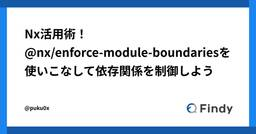

Findy Tech Blog
https://tech.findy.co.jp/
Findy Tech Blog
フィード

Nx活用術！ @nx/enforce-module-boundaries を使いこなして依存関係を制御しよう 17
17
Findy Tech Blog
ファインディ株式会社 でフロントエンドのリードをしている新福(@puku0x)です。 弊社のフロントエンドの多くは、プロダクト単位のモノレポで管理されています。 Nx を用いたモノレポでは、アプリケーションや関連モジュールを「プロジェクト」として管理しており、モノレポ内にある多数のプロジェクトを組み合わせてアプリケーションを作るため、各プロジェクトの依存関係の制御が非常に重要となります。 この記事では、Nxが標準搭載しているESLintルール @nx/enforce-module-boundaries を活用し、モノレポにおけるプロジェクトの依存関係の制御についてご紹介します。 Nxについては…
5日前

2024 Accelerate State of DevOps Report 概説#3『AIがもたらす変革と課題』
Findy Tech Blog
こんにちは。ソフトウェアプロセス改善コーチでFindy Tech Blog編集長の高橋（@Taka_bow）です。 少し時間が空いてしまいましたが、前回の続きです。 tech.findy.co.jp DORA Reportを正しく読み解くために、前回のブログまでに説明してきたポイントをまとめます。 DORA Report は単なるサーベイの結果ではなく、2014年以降「科学的リサーチ」に基づいて分析されている。 「科学的リサーチ」の具体な内容は書籍『LeanとDevOpsの科学』で解説されている。 Four Keysを元にしたパフォーマンスレベルは統計的な分析手法（クラスター分析）が用いられ、…
9日前
2024年の軌跡と2025年の方針 〜エンジニアリングで事業に革命を起こす〜
Findy Tech Blog
こんにちは、ファインディ CTOの佐藤(@ma3tk)です！ 今回は2024年の振り返りと、2025年のファインディのエンジニア組織における今後の方針についてお話します。 2024年はエンジニアが20名加わり60名規模の組織となり、退職者もほとんど出ない良好な組織文化を築きました。ファインディ全体でも100人以上も増え少しずつ大きくなってきました。テックブログは70本を超え、プロダクト開発の人数が増えていながら開発スピードは1.5倍に向上しました。 数字だけを見ても、この1年の変化の大きさを実感いただけるかもしれませんが、まだまだやるべきことが多く、この成長があってもファインディが実現したいこ…
10日前
Slackワークフローとスプレッドシートを連携して開発工数の内訳を簡単に可視化
Findy Tech Blog
こんにちは！ファインディでFindy Team+開発チームのEMをしている浜田です。 Findy Team+開発チームでは、Slackワークフローとスプレッドシートを連携して開発工数の内訳を可視化しています。 開発工数の内訳を可視化することで、どの開発にどれくらい工数がかかったかや全体の工数のうちどれくらいの割合を開発に使えているかなどを定量的に把握できます。 Slackワークフローとスプレッドシートの説明 Slackワークフロー 工数の内訳と割合 トイル Slackワークフロー作成手順 まとめ Slackワークフローとスプレッドシートの説明 ここからはTeam+開発チームで実際に使っているS…
17日前
Findyの爆速開発を支えるタスク分解
Findy Tech Blog
こんにちは。 ファインディ で Tech Lead をやらせてもらってる戸田です。 既に皆さんも御存知かと思いますが、弊社では開発生産性の向上に対して非常に力を入れています。 以前公開した↓の記事で、弊社の高い開発生産性を支えている取り組み、技術についてお話させていただきました。 tech.findy.co.jp ありがたいことに、この記事を多くの方に読んでいただき反響をいただいております。 そこで今回は、↑の記事でも紹介されている「タスク分解」について更に深堀りしてお話しようと思います。 タスク分解は、弊社にJOINしたら最初に必ず覚えてもらう最重要テクニックの中の1つです。 それでは見てい…
25日前
2024年ふりかえり！Findy Tech Blogの人気記事まとめ
Findy Tech Blog
あけましておめでとうございます！ Findy Tech Blog編集長でソフトウェアプロセス改善コーチの高橋（@Taka_bow）です。 昨年2月末にスタートしたFindy Tech Blogが、なんと総PV数30万を突破しました！ ここまで成長できたのも、記事を読んでくださる皆さんのおかげです。本当にありがとうございます。 今日は2024年、特に人気を集めた記事をいくつかの視点からピックアップしてご紹介します。技術のトレンドから生産性向上テクニックまで、きっと皆さんの関心に響く記事が見つかるはずです。 それでは早速、ふりかえっていきましょう！ 2024年下期トピックス ITmedia NEW…
1ヶ月前
Findyのエンジニアおみくじの舞台裏を大公開！
Findy Tech Blog
新年、明けましておめでとうございます。 ファインディ株式会社でフロントエンドのリードをしている新福(@puku0x)です。 今年も「エンジニアおみくじ」の季節がやって参りました 🎉 企画の詳細につきましては↓の記事をご参照ください。 findy-code.io 今回はエンジニアおみくじ開発の舞台裏をお話ししようと思います。 エンジニアおみくじとは 舞台裏① 企画からエンジニアが関わる 舞台裏② おみくじパターンは18万通り以上 まとめ エンジニアおみくじとは エンジニアおみくじは Findy で毎年1月に開催しているイベントです。 期間中にFindyへログインし、引いたおみくじをシェアすると抽…
1ヶ月前
「改訂新版 良いコード/悪いコードで学ぶ設計入門」を使ったリファクタリングの事例
Findy Tech Blog
こんにちは！ファインディのプロダクト開発部でエンジニアをしているham (@hamchance0215)とEND（@aiandrox）です。 この記事はFindy Advent Calendar 2024 25日目の記事ということで、2人で共同執筆しています。 adventar.org この記事について ファインディでは日頃からお世話になっている皆さんに感謝の気持ちを込めて「Findyユーザー感謝祭 2024」を12/19に開催しました。 イベント中に、参加者の一人であるミノ駆動(@MinoDriven)さんが12/25発売の著書「改訂新版 良いコード/悪いコードで学ぶ設計入門」を参加者4名に…
1ヶ月前
GitHub Copilot in VS Code カスタムインストラクションの設定と効果検証【実践編】
Findy Tech Blog
こんにちは。 ファインディ で Tech Lead をやらせてもらってる戸田です。 弊社では開発生産性の向上のための投資、検証を継続して行っており、生成AIの活用にも取り組んでいます。 前回の記事で、導入編と題しましてGitHub Copilot in VS Codeのカスタムインストラクションの設定、利用方法を紹介しました。 tech.findy.co.jp 今回は実践編と題しまして、カスタムインストラクションに設定する内容の調整方法について紹介したいと思います。 それでは見ていきましょう！ まず叩き台を用意する Copilotが理解しやすい形に書き換えていく 不要なものは削除する 長い文章…
1ヶ月前
NxのGeneratorを活用した管理画面200ページのリニューアル事例
Findy Tech Blog
ファインディ株式会社でフロントエンドの開発をしております千田(@_c0909)です。 この記事はFindy Advent Calendar 2024 24日目の記事です。 adventar.org 転職サービス『Findy』の管理画面リニューアルプロジェクトで、約200ページ規模の開発をしました。 管理画面の機能は構成が似通っているため、NxのGeneratorによるコード自動生成を活用して画面作成の効率化を図りました。 本記事では、その取り組みについて共有させていただきます。 Nxについては以前の記事で紹介しておりますので、併せてご覧ください。 tech.findy.co.jp Genera…
1ヶ月前
GitHub Copilot in VS Code カスタムインストラクションの設定と効果検証【導入編】
Findy Tech Blog
こんにちは。 ファインディで Tech Lead をやらせてもらってる戸田です。 弊社では開発生産性の向上のための投資、検証を継続して行っており、生成AIの活用にも取り組んでいます。 そこで今回は、GitHub Copilot in VS Codeのカスタムインストラクションを導入した際の話を紹介しようと思います。 筆者も最近導入したばかりでフル活用までいっていないのが現状ですが、開発生産性の向上を見込めると確信している強力な機能となっています。 それでは見ていきましょう！ GitHub Copilot in VS Codeとは 設定方法 効果検証 まとめ GitHub Copilot in …
1ヶ月前
Findy Toolsのデータ基盤を1ヶ月前倒しで新規構築した話
Findy Tech Blog
はじめに この記事はFindy Advent Calendar 2024 21日目の記事です。 adventar.org データソリューションチーム、エンジニアの土屋(@shunsock)です。本日は、Findy Toolsのデータ基盤を構築したので、その内容を共有します。 Findy Toolsは、2024年1月23日にリリースされた開発ツールのレビューサイトです。利用者は開発者向けツールのレビューやアーキテクチャの記事を閲覧、投稿できます。 Findy Toolsのデータ基盤のシステム設計の紹介 システム設計の目標、要件 今回の構築では、「Findy Toolsを訪れたユーザーの行動ログと…
1ヶ月前
2024 Accelerate State of DevOps Report 概説#2 『巨匠の不満から誕生した"LeanとDevOpsの科学"』
Findy Tech Blog
こんにちは。ソフトウェアプロセス改善コーチでFindy Tech Blog編集長の高橋（@Taka_bow）です。 さて、前回の続きです。 tech.findy.co.jp 順調に行っていたかに見えたState of Devops Reportですが、ここにきて大きな壁が立ちふさがります。それが、ソフトウェア界の巨匠Martin Fowler（マーティン・ファウラー）でした。 , via Wikimedia Commons" href="https://commons.wikimedia.org/wiki/File:Webysther_20150414193208_-_Martin_Fowle…
1ヶ月前
2024 Accelerate State of DevOps Report 概説#1 『"LeanとDevOpsの科学"の「科学」とは何か？』
Findy Tech Blog
こんにちは。ソフトウェアプロセス改善コーチでFindy Tech Blog編集長の高橋（@Taka_bow）です。 2024年10月23日、2024 DORA Accelerate State of DevOps Report、通称DORA Reportが公開されました。 2024 DORA Accelerate State of DevOps Report 表紙 このレポートは、ソフトウェア開発における運用と実践について、科学的な手法で調査・分析した結果をまとめたものです。 私は毎年このレポートを楽しみにしています。今年は10回目10年目の節目ということで、いつもより丁寧に読みました。 詳し…
1ヶ月前
GitHubからエンジニアスキルを可視化する「スキル偏差値」を大幅リニューアルした話
Findy Tech Blog
こんにちは。 FindyでMLエンジニアをしているyusukeshimpo(@WebY76755963)です。 今回は直近で公開した「スキル偏差値ver.3」機能について、その内容や具体的な機械学習モデルの作成方法について紹介します。 Findyのスキル偏差値とは？ スキル偏差値の概要 アップデートすることになった背景 スキルの見える化する、スキル偏差値ver.3の詳細 1.学習データの作成 1-1.使用言語ごとのデータ準備 1-2.ペアワイズ形式のデータ構築 1-3.勝敗アノテーションの付与 2.ランキング学習 2-1.ペアワイズデータの特徴量生成 2-2.機械学習モデルによる勝敗予測 3.…
2ヶ月前
Findy Team+のデータインポートのアプリケーションアーキテクチャを大公開！
Findy Tech Blog
こんにちは、ファインディでFindy Team+（以下Team+）を開発しているEND（@aiandrox）です。この記事はFindy Advent Calendar 2024 10日目の記事です。 adventar.org Team+ではコード管理ツール・イシュー管理ツール・カレンダーなど、様々な性質の外部サービスと連携して、エンジニア組織における開発生産性の可視化・分析を行うためのデータを取得しています。 この分析を行うためには、外部サービスごとに異なるデータ構造やAPI仕様の差を吸収した統一的なデータ管理を行う必要があります。この課題を解決するため、異なるサービスのデータを統合し、単一の…
2ヶ月前
新しい技術領域へのチャレンジを促進！フロントエンドエンジニアのためのバックエンド勉強会を開催
Findy Tech Blog
こんにちは！ファインディでFindy Team+開発チームのEMをしている浜田です。 この記事はFindy Advent Calendar 2024 6日目の記事です。 adventar.org 今年の上旬、フロントエンジニア向けにバックエンド勉強会を開催しました。この記事ではバックエンド勉強会を開催した目的や内容、効果について紹介します。 バックエンド勉強会を開催した背景 バックエンド勉強会の概要 バックエンド勉強会の内容 RubyやRailsの学習 VS Codeのプラグイン設定 Rails console / dbconsoleを使ってみる ruby-lang.orgを読む Railsガ…
2ヶ月前
Nx活用術！モノレポ内のStorybookのパス設定自動化
Findy Tech Blog
ファインディ株式会社でフロントエンドのリードをしている新福(@puku0x)です。 この記事はFindy Advent Calendar 2024 4日目の記事です。 adventar.org Nxはモノレポ管理の便利なユーティリティとして @nx/devkit を提供しています。 今回は @nx/devkit を利用したStorybookの設定の自動化についてご紹介します。 Nxについては以前の記事で紹介しておりますので、気になる方は是非ご覧ください。 tech.findy.co.jp モノレポでStorybookをどのように管理するか？ どうやってパス設定を自動化するか？ 実装してみよう！…
2ヶ月前
【エンジニアの日常】エンジニア達の人生を変えた一冊 Part3
Findy Tech Blog
【エンジニアの日常】エンジニア達の人生を変えた一冊 Part2に続き、エンジニア達の人生を変えた一冊をご紹介いたします。 今回はPart3としまして、Findy Freelanceの開発チームメンバーから紹介します。 人生を変えた一冊 マスタリングTCP/IP―入門編 ハッカーと画家 コンピュータ時代の創造者たち UNIXという考え方 まとめ 人生を変えた一冊 マスタリングTCP/IP―入門編 マスタリングTCP/IP―入門編―(第6版)作者:井上 直也,村山 公保,竹下 隆史,荒井 透,苅田 幸雄オーム社Amazon 主にバックエンド開発と開発チームのリーダーを担当している中坪です。 私が紹…
2ヶ月前
Nx活用術！Larger runnerの動的設定でGitHub Actionsのコスパ改善！
Findy Tech Blog
ファインディ株式会社でフロントエンドのリードをしている新福(@puku0x)です。 皆さん、GitHub ActionsのLarger runnerはご存知でしょうか？ 高性能なマシンを使ってCIを実行できる一方、変更の少ない場合や計算負荷の低いCIではコストパフォーマンスが悪くなってしまいがちですよね？🤷♂️ この記事では、Nxの機能を利用してLarger runnerを動的に切り替える方法をご紹介します。 Nxについては以前の記事で紹介しておりますので、気になる方は是非ご覧ください。 tech.findy.co.jp Larger runner（より大きなランナー） 課題 解決策 結果 …
2ヶ月前
Findyの爆速開発を支える、価値提供を最優先にするための開発手法
Findy Tech Blog
こんにちは。 Findy で Tech Lead をやらせてもらってる戸田です。 このテックブログでは開発生産性を向上させるための取り組みや、開発テクニックを紹介してきました。 意外に思われるかもしれませんが、弊社では全てのことを100％でやってるわけではなく、ユーザーへの価値提供を最優先するために後回しにしている部分もあります。 しかし、その影響で障害が多発したり、困ったことになることは滅多にありません。 そこで今回は、ユーザーへの価値提供を最優先するために弊社で実践していることを紹介していこうと思います。 それでは見ていきましょう！ 綺麗なコードは後。アプリケーションの振る舞いが先。 コミ…
2ヶ月前
IT人材不足79万人の真因：生産性向上を阻む『人月の神話型請負』からの脱却
Findy Tech Blog
はじめに こんにちは。ソフトウェアプロセス改善コーチでFindy Tech Blog編集長の高橋（@Taka_bow）です。 経済産業省の2019年発表によると、日本のIT人材不足が2030年には79万人に達する可能性があると予測され、しばしばメディアにも引用されてきました。 この調査レポート発表から5年以上が経過しましたが、果たして79万人という人材不足は現実となるのでしょうか？ 今回は最新のデータからこの予測を検証してみたいと思います。 2023年11月2日のNHKニュース www3.nhk.or.jp 2024年7月9日 5:00 (2024年7月13日 17:40更新) 日経新聞 [会…
3ヶ月前
Findyの爆速開発を支えるFeature Flagの使い方
Findy Tech Blog
こんにちは。 ファインディでソフトウェアエンジニアをしている栁沢です。 ファインディの各プロダクトでは、1日に複数回デプロイしています。 例えば、私が所属するFindy転職のプロダクトでは、1日に6回ほど本番環境にデプロイしています。 高いデプロイ頻度でもデプロイ起因による障害や不具合がほぼ発生しておらず、開発スピードと品質の両立を実現できています。 今回はファインディ社内でのFeature Flagの使い方について詳しく解説します！ Feature Flagを使うことのメリット Feature Flagの実現方法 Feature Flagを使った開発の流れ 1. Feature Flagを追…
3ヶ月前
AWS上のNext.js App RouterとCDNキャッシュ利用の課題と解決策
Findy Tech Blog
こんにちは。 Findy Toolsの開発をしている林です。 私たちのプロジェクトではフロントエンドのフレームワークにNext.js App Routerを使っており、AWSのECSへデプロイして運用しています。 そして、一部のレンダリングの処理が重いページのキャッシュを実装する際に、直面した課題と解決策を紹介します。 Next.jsのキャッシュ機構について 今回実現したいこと 課題と解決策 課題1: Next.jsの機能では要件に合わない 解決策1: CloudFrontのみでキャッシュ 課題2: エラーページがキャッシュされる 解決策2: Lambda@Edgeを用いたCache-Cont…
3ヶ月前
Nx Agentsを導入してフロントエンドのCIを約40%高速化しました
Findy Tech Blog
ファインディ株式会社でフロントエンドのリードをしている新福(@puku0x)です。 弊社では Nx を活用してCIを高速化しています。この記事では、最近導入した Nx Agents でフロントエンドのCIをさらに高速化した事例を紹介します。 Nxについては以前の記事で紹介しておりますので、気になる方は是非ご覧ください。 tech.findy.co.jp フロントエンドのCIの課題 Nx Agents Nx Agents導入の結果 Nx Agents利用上の工夫 プロジェクトを細かく分割する Node.jsのバージョンを揃える キャッシュの活用 特定のステップの省略 高度なエージェント割り当て …
3ヶ月前
【エンジニアの日常】エンジニア達の人生を変えた一冊 Part2
Findy Tech Blog
【エンジニアの日常】エンジニア達の人生を変えた一冊 Part1では大変ご好評をいただきました。 今回はPart2としまして、弊社エンジニアの人生を変えた一冊をご紹介いたします。 ぜひ、読書の秋のお供としてご参考にしていただければ幸いです！ 人生を変えた一冊 SRE サイトリライアビリティエンジニアリング―Googleの信頼性を支えるエンジニアリングチーム プログラマが知るべき97のこと この本を読んだきっかけ Clint Shankさんのエッセイ「学び続ける姿勢」 Karianne Bergさんのエッセイ「コードを読む」 この本から学んだこと Clean Coder プロフェッショナルプログラ…
3ヶ月前
Findyのエンジニア爆速成長の事例 2024年夏
Findy Tech Blog
こんにちは。こんばんは。 開発生産性の可視化・分析をサポートする Findy Team+ 開発のフロントエンド リードをしている @shoota です。 先日、END が 【フルスタックエンジニアへの道！】React と TypeScript の修行をした話 というタイトルで、フルスタックエンジニアを目指すためのフロントエンドの修行の記事を投稿いたしました。 こちらの記事では React / TypeScript において個人学習程度のレベルにあった END が、機能開発を自走可能になるまでの内容が書かれています。 そこで本記事では、END の成長と挑戦をサポートし、実際に指導にあたった私がメ…
4ヶ月前
Findyの爆速開発を支えるPull requestの粒度
Findy Tech Blog
こんにちは。 Findy で Tech Lead をやらせてもらってる戸田です。 既に皆さんも御存知かと思いますが、弊社では開発生産性の向上に対して非常に力を入れています。 以前公開した↓の記事で、弊社の高い開発生産性を支えている取り組み、技術についてお話させていただきました。 tech.findy.co.jp ありがたいことに、この記事を多くの方に読んでいただき反響をいただいております。 そこで今回は、↑の記事でも紹介されている「Pull requestの粒度」について更に深堀りしてお話しようと思います。 Pull requestの粒度は、弊社にJOINしたら最初に必ず覚えてもらう最重要テク…
4ヶ月前
【フルスタックエンジニアへの道！】ReactとTypeScriptの修行をした話
Findy Tech Blog
こんにちは、ファインディでFindy Team+（以下Team+）を開発しているEND（@aiandrox）です。 普段はバックエンドの開発をメインで担当しているのですが、3ヶ月間フロントエンドの開発に挑戦する機会がありました。短い期間でしたが、フロントエンドテックリードから直接指導してもらいながら実装をすることで、フロントエンドの開発を一人でできるくらいに慣れることができました。 今回は、その経験と学びについて書いていきます。 フロントエンドに挑戦する前の自分について フロントエンドに挑戦することになった経緯 フロントエンドを学ぶ上で助けられたこと フロントエンドのノウハウが溜まった記事の充…
4ヶ月前
入社初月からさくさくアウトプット！スムーズな立ち上がりを支えるオンボーディングの具体例
Findy Tech Blog
こんにちは。 2024/7/1 からファインディに入社した斎藤です。 ファインディでは、Findy Team+ という、エンジニア組織の開発生産性を可視化し、開発チームやエンジニアリングメンバーのパフォーマンスを最大化するためのサービスの開発に携わっています。 今回は、私が入社初月からさくさくアウトプットできた理由についてご紹介します！ 入社初月からプルリク1日4件出せました ファインディでは1日あたり4件プルリクを作成するというのを1つの指標としています。 入社直後は慣れるまでは結構厳しい指標だなと思っていたのですが、この記事で紹介する様々な仕組みのサポートもあり気がついたら初月から達成でき…
4ヶ月前